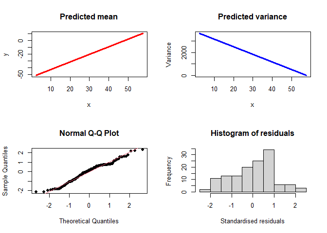
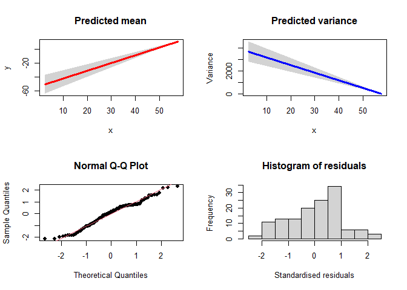
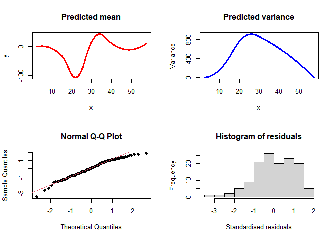

The goal of VarReg is to provide methods for fitting semi-parametric mean and variance models, with normal or censored data. This has also been extended to allow a regression in the location, scale and shape parameters. This algorithm is based upon an EM (Expectation Maximisation) algorithm, so is more stable than other similar methods like GAMLSS.
There is a algorithm paper published: Robledo, K.P., Marschner, I.C. A new algorithm for fitting semi-parametric variance regression models. Comput Stat 36, 2313–2335 (2021). https://doi.org/10.1007/s00180-021-01067-6
Author
Kristy Robledo https://github.com/kristyrobledo
NHMRC Clinical Trials Centre, University of Sydney
Installation
You can install the released version of VarReg from CRAN with:
install.packages("VarReg")And the development version from GitHub with:
remotes::install_github("kristyrobledo/VarReg")Examples
For more examples, see this repository https://github.com/kristyrobledo/VarReg-paper-code which is based on providing the code from a draft software paper here https://github.com/kristyrobledo/VarReg-paper.
This is a basic example to read in the mcycle dataset and perform a linear model in the mean and the variance:
library(VarReg)
#> Welcome to the 'VarReg' package to perform semi-parametric regression
## read in dataset
data(mcycle)
## run a model with linear mean and linear variance:
linmodel<-semiVarReg(mcycle$accel, mcycle$times, meanmodel="linear", varmodel="linear",
maxit=10000)Now we can plot the model:
plotVarReg(linmodel)
##can also add CI
plotVarReg(linmodel, ci=TRUE, ci.type = "im")
#> [1] "CI=true, type=information matrix"
Or we can look at the results:
linmodel$loglik
#> [1] -683.5092
linmodel$mean
#> Intercept mcycle$times
#> -53.69517 1.11797
linmodel$variance
#> Intercept mcycle$times
#> 3824.07225 -66.39011We can also run a model with semi-parametric mean (4 internal knots) and semi-parametric variance (2 knots):
semimodel<-semiVarReg(mcycle$accel, mcycle$times, meanmodel="semi", varmodel="semi",
knots.m=4, knots.v=2, maxit=10000)
plotVarReg(semimodel)
## run a model with semi-parametric mean (4 internal knots) and semi-parametric monotonic
## variance (2 knots):
## not run
##semimodel_inc<-semiVarReg(mcycle$accel, mcycle$times, meanmodel="semi", varmodel="semi",
##knots.m=4, knots.v=2, mono.var="inc")Lastly, we can fit a model with a model in the location, scale and shape. Im not going to run this, just show the code, as it takes a while to run on my laptop!
## LSS model followed by the basic plot command
#lssmodel<-lssVarReg(mcycle$accel, mcycle$times, locationmodel="linear", scale2model="linear", shapemodel="constant", maxit=10000)
#plotlssVarReg(lssmodel, xlab="Time in seconds", ylab="Acceleration")Enjoy!